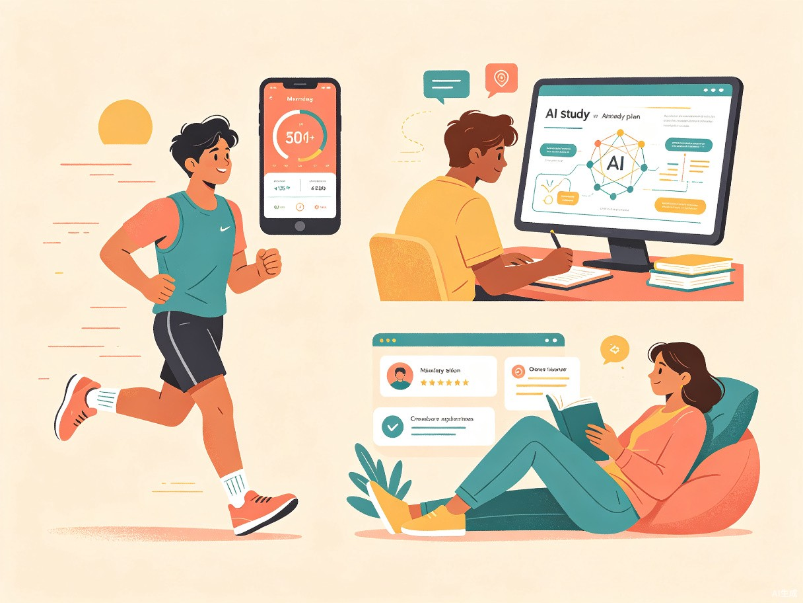

创意名称 + 创意介绍
DayFlow —— 取 "日" 与 "流" 之意，寓意每一天的信息流与生活节奏自然交汇。
年轻人每天在抖音、B 站、小红书等多个平台关注了大量创作者，但更新通知散落在各处，常常错过感兴趣的内容。与此同时，运动健身、考研复习、面试准备等个人计划缺乏趁手的工具来制定和坚持，很多人靠备忘录或纸质本子记录，容易半途而废。
这两个看似独立的需求其实有一个共同点：用户需要的是一个能主动推送、持续陪伴的助手，而不是一个需要自己去打开、去维护的工具。
我自己就是重度短视频用户，关注的博主分布在好几个平台，经常想起来才去刷，结果要么信息过载刷太久，要么完全忘了看。同时身边考研、健身的朋友总在吐槽计划坚持不下去，市面上的 App 要么太重（功能堆砌），要么太轻（就是个倒计时）。我想把"追更"和"自律"这两个高频场景整合到一个产品里，用 AI 让它变得轻量又好用。
一款面向年轻人的日常生活 App，核心功能是跨平台创作者更新聚合推送 + AI 驱动的运动与学习计划生成与追踪。
目标用户及痛点
18-28 岁的大学生和职场新人。他们是社交媒体的重度用户，同时处于需要自我提升的阶段 —— 有人准备考研、有人刚开始健身、有人在为春招面试做准备。他们习惯用手机管理生活，对 AI 工具接受度高，但时间碎片化，注意力容易被短视频分散。

- 早晨通勤路上：打开 DayFlow，一键浏览昨晚到今早关注的博主更新摘要，不再逐个平台刷
- 午休或课间：查看 AI 生成的今日学习/运动计划，按步骤执行并打卡
- 晚间复盘：回顾今天的计划完成情况，AI 根据执行数据自动调整明天的安排
- 周末规划：让 AI 根据考试日期或健身目标，自动拆解下周的训练/复习计划
信息分散 —— 关注的博主分布在抖音、B 站、小红书等不同平台，没有统一的地方查看更新，要么靠各平台的推送通知（容易被淹没），要么全凭记忆去刷。
计划难坚持 —— 做计划容易，执行难。现有的计划类 App 要么需要大量手动设置，要么缺乏个性化的建议，用户很快就会放弃。
两个需求割裂 —— "追更"和"自律"在现有产品中是完全分离的，用户需要在不同 App 之间切换，增加了认知负担和使用门槛。
价值与意义
效率提升
DayFlow 把"发现内容"的主动搜索变成"内容找你"的被动接收。用户每天只需花 5 分钟浏览聚合推送，就能掌握所有关注博主的动态，不再因为逐个平台刷而浪费 1-2 小时。AI 计划功能则把"想坚持但不知道怎么安排"的模糊意图，转化为具体的每日行动步骤，降低执行门槛。
社会价值
对于正在备考或刚开始自律生活的年轻人来说，坚持本身就是最大的困难。DayFlow 通过 AI 个性化陪伴和适时的正向反馈，帮助用户建立可持续的自我管理习惯。长期来看，这比任何一次性的知识付费课程都更有实际意义 —— 它让"变得更好"这件事变得不再那么费力。